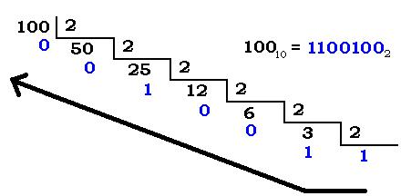

<html>
<head>
    <title>Introduccion a Ciencia de la Computacion 11va Edicion</title>
    <link href="MiCss.css" rel="stylesheet" type="text/css">
    <FONT SIZE = 6><h1 align="center"> Capitulo 1: Almacenamiento de Datos </h1></FONT>
</head>
<body background="portada.jpg">
    <FONT SIZE = 4><p1 align = "center">En este capítulo vamos a considerar los temas asociados con la representación
            y el almacenamiento de datos dentro de una computadora. Entre los
            tipos de datos que tomaremos en consideración se incluyen los textos,
            los valores numéricos, las imágenes, el audio y el vídeo. Buena parte de la
            información contenida en este capítulo es también relevante en otros campos
            distintos de la computación tradicional, como la fotografía digital, la grabación
            y reproducción de audio/vídeo y las comunicaciones a larga distancia. 
    </p1></FONT>
    <h2 align="left"> 1.1 Los bits y su almacenamiento </h2>
    <FONT SIZE = 4><p2 align="left">Dentro de las computadoras actuales, la información se codifica mediante
                patrones de 0s y 1s. Estos dígitos se denominan bits (abreviatura de binary
                digits, dígitos binarios). Aunque uno podría sentirse inclinado a asociar los bits
                con valores numéricos, se trata realmente de símbolos cuyo significado depende
                de cada aplicación concreta. En ocasiones, los patrones de bits se usan para
                representar valores numéricos; en otros casos, representan caracteres de un
                alfabeto y signos de puntuación, a veces representan imágenes y otras sonidos.
        </p2></FONT>

        <div align="center"></div>

    <h3 align = "left"> Operaciones Booleanas </h3>
    <FONT SIZE = 4><p3 align = "left">Para entender cómo se almacenan y manipulan los bits individuales dentro de
                una computadora, es conveniente imaginar que el bit 0 representa el valor
                falso y que el bit 1 representa el valor verdadero, porque eso nos permite pensar
                en la manipulación de bits como si se tratara de la manipulación de valores verdadero/
                falso. Las funciones que permiten manipular valores verdadero/
                falso son las operaciones booleanas, en honor del matemático George Boole
                (1815–1864), que fue un pionero en el campo de las matemáticas conocido con
                el nombre de lógica. Tres de las operaciones booleanas básicas son AND, OR y
                XOR (OR exclusiva), como se resume en la Figura 1.1. Estas operaciones son
                similares a las operaciones aritméticas de multiplicación y suma, porque combinan
                un par de valores (los datos de entrada de la operación) para generar un
                tercer valor (la salida). Sin embargo, a diferencia de las operaciones matemáticas,
                las operaciones booleanas combinan valores de tipo verdadero/falso en
                lugar de valores numéricos.
            </p3></FONT>

            <div align="center"></div>
   


        <H2>1.2 Memoria principal</H2>
        <FONT SIZE = 4> <p4>Con el objetivo de almacenar datos, una computadora contiene un enorme conjunto
                    de circuitos (tales como biestables), cada uno de los cuales es capaz de
                    almacenar un único bit. Este conjunto de bits se conoce como memoria principal
                    de la máquina.
            </p4></FONT>
            
            <div align="center"></div>

        <h3>Organización de la memoria</h3>
        <FONT SIZE = 4><p5>La memoria principal de una computadora está organizada en una serie de unidades
                    accesibles denominadas celdas, siendo el tamaño típico de celda igual a
                    ocho bits. (Una cadena de ocho bits se denomina byte. Por tanto, una celda de
                    memoria típica tiene una capacidad de un byte.) Las computadoras pequeñas
                    utilizadas en electrodomésticos tales como los hornos microondas pueden disponer
                    de memorias principales compuestas por solo unos pocos cientos de celdas,
                    mientras que las computadoras de mayor tamaño pueden tener miles de
                    millones de celdas en su memoria principal.
                    Aunque no existen los conceptos de izquierda ni derecha en una computadora,
                    normalmente tendemos a conceptualizar los bits de una celda de memoria
                    como si estuvieran organizados en una fila. El extremo izquierdo de esta fila se
                    denomina extremo de mayor peso y el extremo derecho se denomina extremo
                    de menor peso. El bit más a la izquierda se denomina bit de mayor peso o bit
                    más significativo para hacer referencia al hecho de que si interpretáramos el contenido de la celda como si representaran un valor numérico, dicho bit sería el
                    dígito más significativo del número. De forma similar, el bit situado más a la derecha
                    es el bit de menor peso o bit menos significativo. Por tanto, podemos representar
                    el contenido de una celda de memoria de tamaño igual a un byte</p5></FONT>
        <h3>Medida de la capacidad de memoria</h3>
        <FONT SIZE = 4><p6>Como veremos en el siguiente capítulo, es conveniente diseñar los sistemas de
                            memoria principal de forma que el número total de celdas sea una potencia de dos.
                            A su vez, el tamaño de las memorias en las antiguas computadoras se medía a
                            menudo en múltiplos de 1024 (210) celdas. Puesto que 1024 es un valor muy próximo
                            a 1000, la comunidad informática ha adoptado el prefijo kilo para hacer referencia
                            a esta unidad. Es decir, el término kilobyte (abreviado como KB) se utilizaba
                            para referirse a 1024 bytes. Por tanto, de una máquina con 4096 celdas de memoria
                            se decía que tenía una memoria de 4KB (4096  4  1024). A medida que las
                            memorias fueron teniendo mayor tamaño, esta terminología se amplió para incluir
                            el MB (megabyte), el GB (gigabyte) y el TB (terabyte). Lamentablemente, esta aplicación
                            de los prefijos kilo-, mega-, etc., representa una utilización incorrecta de la
                            terminología, puesto que esos prefijos se emplean en otros campos para hacer
                            referencia a unidades que son potencias de mil. Por ejemplo, a la hora de medir distancias, la palabra kilómetro representa 1000 metros y cuando se miden frecuencias
                            de radio, un megahercio representa 1.000.000 de hercios. Por tanto, conviene
                            tener cuidado al emplear esta terminología. Como regla general, los
                            prefijos como kilo-, mega-, etc. hacen referencia a potencias de dos cuando se les
                            utiliza en el contexto de la memoria de una computadora, mientras que en otros
                            contextos hacen referencia a potencias de mil.</p6></FONT>
            <h2>1.3 Almacenamiento masivo</h2>
            <FONT SIZE = 4><p7>Debido a la volatilidad y al tamaño limitado de la memoria principal de una computadora,
                    la mayoría de las computadoras disponen de dispositivos de almacenamiento
                    adicionales conocidos como sistemas de almacenamiento masivo (o de
                    almacenamiento secundario), entre los que se incluyen los discos magnéticos, los
                    discos CD y DVD, las cintas magnéticas y las unidades flash, de los que hablaremos
                    más adelante. Entre las ventajas de los sistemas de almacenamiento masivo, con
                    respecto a la memoria principal, podemos citar una menor volatilidad, mayores
                    capacidades de almacenamiento, su bajo coste y, en muchos casos, la capacidad de
                    extraer el medio de almacenamiento de la máquina, con el propósito de archivarlo.
                    A menudo se emplean los términos en línea y fuera de línea para describir a
                    aquellos dispositivos que pueden estar conectados o no a una máquina. Estar
                    en línea significa que el dispositivo o la información están conectados y la
                    máquina puede acceder fácilmente a ellos, sin que haya intervención humana.
                    Estar fuera de línea significa que se requiere intervención humana para que
                    la máquina pueda acceder al dispositivo o la información, quizá porque el dispositivo
                    debe encenderse o porque el medio en el que se almacena la información
                    debe introducirse en algún tipo de mecanismo.
                    Una de las principales desventajas de los sistemas de almacenamiento
                    masivo es que normalmente requieren algún tipo de movimiento mecánico,
                    por lo que hace falta un tiempo considerablemente mayor para almacenar y
                    extraer los datos del que se necesita en la memoria principal de la computadora,
                    en la que todas las actividades se llevan a cabo de forma electrónica.</p7></FONT>

                    
            <div align="center"></div>

            <h3>Sistemas magnéticos</h3>
            <FONT SIZE = 4><p8>Durante años, la tecnología magnética ha sido la dominante dentro del sector
                    del almacenamiento masivo. El ejemplo más común y que todavía se utiliza es
                    el disco magnético, en el que se utiliza un fino disco giratorio con un recubrimiento
                    magnético para almacenar los datos (Figura 1.9). Los cabezales de lectura/
                    escritura se colocan por encima y/o por debajo del disco, de modo que
                    cuando el disco gira, cada cabezal recorre un círculo, denominado pista.
                    Reposicionando los cabezales de lectura/escritura puede accederse a las distintas
                    pistas concéntricas. En muchos casos, un sistema de almacenamiento en
                    disco está formado por varios discos montados sobre un eje común, apilados
                    unos encima de otros, dejando el espacio suficiente para poder deslizar los
                    cabezales de lectura/escritura entre un disco y otro. En tales casos, los cabezales
                    de lectura/escritura se mueven al unísono. Cada vez que se reposicionan
                    los cabezales de lectura/escritura, pasa a estar accesible un nuevo conjunto de
                    pistas, que se denomina cilindro.</p8></FONT>
        <h3>Sistemas Opticos</h3>
        <FONT SIZE = 4><p9>Otra clase de sistemas de almacenamiento masivo utiliza la tecnología óptica.
                Un ejemplo es el disco compacto (CD, Compact Disk). Estos discos tienen 12
                centímetros de diámetro y están compuestos de un material reflectante,
                cubierto con una capa protectora transparente. La información se almacena en
                estos discos creando variaciones en sus superficies reflectantes. Esta información
                se puede entonces extraer mediante un rayo láser que detecta las irregularidades
                en la superficie reflectante del CD, a medida que este gira.
                La tecnología de CD se aplicó originalmente a las grabaciones de sonido,
                utilizando un formato de grabación conocido como CD-DA (Compact Disk-
                Digital Audio, Disco compacto-sonido digital) y los CD utilizados hoy día para
                el almacenamiento de datos emplean esencialmente el mismo formato. En particular,
                la información en estos CD se almacena en una única pista que gira en
                espiral alrededor del CD, como el surco de uno de esos discos de vinilo ya pasados
                de moda. Sin embargo, a diferencia de esos discos de vinilo, la pista de un
                CD se desarrolla en espiral desde el interior hacia el exterior (Figura 1.11). Esta
                pista está dividida en unidades denominadas sectores, cada uno con sus propias
                marcas de identificación y con una capacidad de 2KB de datos, que equivale a
                1⁄75 de un segundo de música en el caso de las grabaciones de audio.
                Observe que la distancia recorrida por la pista en espiral es mayor en las
                proximidades del borde externo del disco que en las partes situadas más cerca
                del centro. Para maximizar la capacidad de un CD, la información se almacena
                con una densidad lineal uniforme a lo largo de toda la pista en espiral, lo que
                quiere decir que hay más información almacenada en uno de los círculos externos
                de la espiral que en uno de los círculos internos. A su vez, se leerán más
                sectores en una única revolución del disco cuando el rayo láser esté explorando
                la parte externa de la pista en espiral que cuando esté explorando la parte
                interna de la misma. Por tanto, para obtener una tasa de transferencia de datos
                uniforme, los reproductores de CD-DA están diseñados para que la velocidad
                de rotación varíe dependiendo de la posición del rayo láser.</p9></FONT>
        <h2>2.4 Instrucciones aritmético/lógicas</h2>
        <FONT SIZE = 4><p>Como hemos indicado anteriormente, el grupo de instrucciones aritmético/
            lógicas está compuesto por instrucciones que codifican operaciones aritméticas,
            lógicas y de desplazamiento. En esta sección, vamos a examinar estas operaciones
            con más detalle.</p></FONT>
            
            <div align="center"></div>

        <h3>Operaciones lógicas</h3>
            <p>En el Capítulo 1 hemos presentado las operaciones lógicas AND, OR y XOR
                (OR exclusiva) como operaciones que combinan dos bits de entrada para generar
                un único bit de salida. Estas operaciones pueden ampliarse a otras operaciones
                que combinen dos cadenas de bits para generar una única cadena de
                salida, aplicando la operación básica a todas las columnas individuales.</p>
        <h2>1.5 El sistema binario</h2>

        <FONT SIZE = 4><p>Recuerde que en el sistema en base diez, cada posición de una representación
            numérica está asociada con un determinado peso. En la representación 375, el
            5 se encuentra en la posición asociada con el peso uno, el 7 está en la posición
            asociada con el peso diez y el 3 está en la posición asociada con el peso cien
            (Figura 1.15a). Cada uno de esos pesos es diez veces el peso de la posición
            situada a su derecha. El valor representado por la expresión completa se
            obtiene multiplicando el valor de cada dígito por el peso asociado con la posición
            de este dígito y luego sumando esos productos. Para ilustrar el proceso, el
            patrón 375 representa (3  cien)  (7  diez)  (5  uno), lo que en notación
            más técnica sería (3  102)  (7  101)  (5  100).</p></FONT>

            
            <div align="center"></div>

        <h2>1.6 Almacenamiento de enteros</h2>
        <FONT SIZE = 4><p>Los matemáticos han estado interesados desde hace mucho tiempo en los sistemas
            de notación numérica y muchas de sus ideas han resultado ser bastante
            compatibles con el diseño de circuitos digitales. En esta sección vamos a considerar
            dos de estos sistemas de notación, la notación en complemento a dos y la
            notación en exceso, que se emplean para representar valores enteros en los
            equipos de computación. Estos sistemas están basados en el sistema binario,
            pero tienen propiedades adicionales que los hacen más compatibles con el
            diseño de computadoras. Sin embargo, estas ventajas también tienen asociadas
            ciertas desventajas. Nuestro objetivo es comprender estas propiedades y ver
            cómo afectan a la utilización de las computadoras.</p></FONT>
            
            <div align="center"></div>

        <h2>1.7 Almacenamiento de números fraccionarios</h2>
        <FONT SIZE = 4><p>Expliquemos la notación en punto flotante utilizando solo un byte de almacenamiento.
            Aunque normalmente las máquinas utilizan patrones mucho más
            largos, este formato de 8 bits es representativo de los sistemas reales y sirve
            para demostrar los conceptos importantes sin el engorro de emplear largos
            patrones de bits.
            En primer lugar, designamos el bit de mayor peso de ese byte como bit de
            signo. De nuevo, un 0 en el bit de signo indicará que el valor almacenado es no
            negativo, mientras que un 1 indicará que el valor es negativo. A continuación,
            dividimos los restantes 7 bits del byte en dos grupos o campos: el campo de
            exponente y el campo de mantisa. Designaremos los 3 bits situados a continuación
            del bit de signo como el campo de exponente y los restantes 4 bits
            como el campo de mantisa. La Figura 1.26 ilustra cómo está dividido el byte.
            Podemos explicar el significado de los campos considerando el siguiente
            ejemplo. Suponga un byte compuesto por el patrón de bits 01101011.
            Analizando este patrón con el formato precedente, vemos que el bit de signo es
            0, el exponente es 110 y la mantisa es 1011. Para decodificar el byte, primero
            extraemos la mantisa y colocamos un punto raíz a su izquierda, obteniendo
            .1011
            A continuación, extraemos el contenido del campo de exponente (110) y lo
            interpretamos como un entero almacenado utilizando el método de notación
            en exceso de 3 bits (consulte de nuevo la Figura 1.25). De ese modo, el patrón
            en el campo de exponente de nuestro ejemplo representa un valor 2 positivo.
            Esto nos indica que debemos mover el punto raíz de nuestra solución hacia la
            derecha un total de 2 posiciones. (Un exponente negativo indicaría que hay que
            mover el punto raíz hacia la izquierda.) En consecuencia, obtenemos
            10.11
            que es la representación binaria de 23⁄4. A continuación, observamos que el bit
            de signo de nuestro ejemplo es 0; el valor representado es por tanto negativo.</p></FONT>
            
            <div align="center"></div>
        
        <h2>1.8 Compresión de datos</h2>
        <FONT SIZE = 4><p>Los esquemas de compresión de datos pueden clasificarse en dos categorías.
            Algunos de ellos son sin pérdidas, mientras que otros son con pérdidas. Los
            esquemas sin pérdidas son aquellos en los que no se pierde información
            durante el proceso de compresión. Los esquemas con pérdidas son esos otros
            que pueden llevar a la pérdida de una parte de la información. Las técnicas con
            pérdidas proporcionan a menudo un mayor grado de compresión que los que
            no tienen pérdidas y son, por tanto, bastante populares en aquellos entornos en
            los que pueden tolerarse los errores poco significativos, como es el caso de las
            imágenes y del audio.
            En aquellos casos en los que los datos que se están comprimiendo están formados
            por largas secuencias del mismo valor, una técnica de compresión muy
            popular es la denominada codificación por longitud de secuencia, que es un
            método de compresión sin pérdidas. Dicha técnica es el proceso de sustituir las
            secuencias de elementos de datos con un código que indica el elemento repetido
            y el número de veces que ese elemento aparece dentro de la secuencia. Por
            ejemplo, esto permite reducir el espacio requerido para indicar que un patrón
            de bits está compuesto por 253 unos, seguidos de 118 ceros y seguidos de 87
            unos. El número de bits almacenados con esta técnica de compresión será
            mucho menor que si enumeráramos los 458 bits que componen el patrón.</p></FONT>

            
            <div align="center"></div>
        
            <h2>1.9 Errores de comunicación</h2>
            <FONT SIZE = 4><p>Cuando se intercambia información entre distintas partes de una computadora,
                o se transmite información desde la Tierra a la Luna, y viceversa, o también
                cuando se almacena simplemente la información, siempre existe la posibilidad
                de que el patrón de bits extraído al final no sea idéntico al patrón original. Las
                partículas de polvo o de grasa en la superficie magnética de grabación o los problemas
                de funcionamiento de un circuito pueden hacer que los datos se graben
                o se lean de manera incorrecta. El ruido estático en una ruta de transmisión
                puede corromper determinadas partes de los datos y, en el caso de algunas tecnologías,
                la radiación de fondo normal puede alterar los patrones almacenados
                en la memoria principal de la máquina.</p></FONT>

                
            <div align="center"></div>
            

        
            

        


        


</body>
</html>
    
